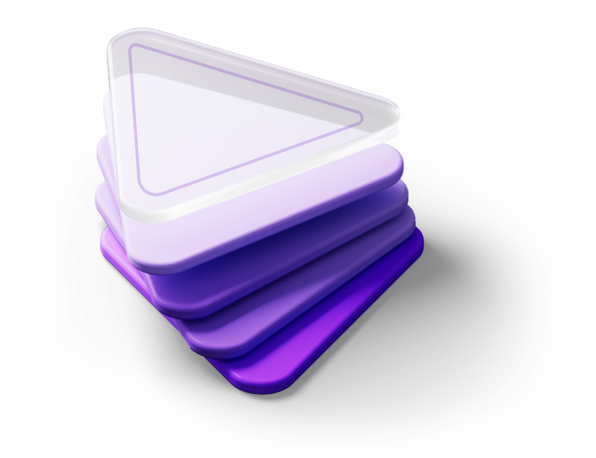
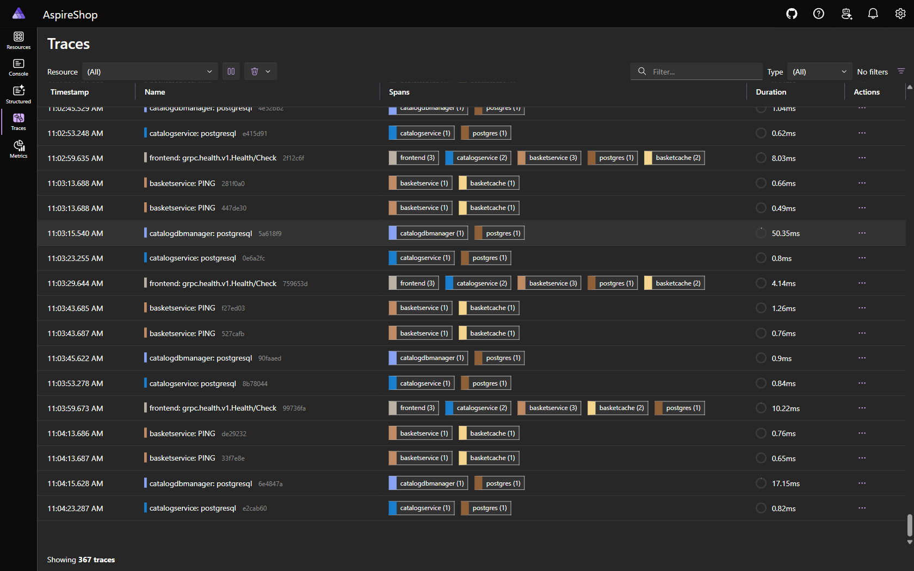

Techorama 2026 · Room 12 · Wed 28 Oct
Use agents to build agents
with Aspire + Microsoft Agent Framework
Maddy Montaquila · Principal PM, Aspire @ Microsoft
Tommaso Stocchi · Cloud Solution Architect, Microsoft
Who we are

Maddy Montaquila
Principal PM, Aspire @ Microsoft
@maddymontaquila

Tommaso Stocchi
Cloud Solution Architect, Microsoft
@tommasodotNET
Agents are in your app now. And in your dev loop.
You’re asked to ship agents — while coding agents write more of your code.
Both need an app that’s easy to run, see, and deploy.
Three ways AI shows up in your work
Demo 1
Use AI
Coding agents that help you do your job faster and better.
Demo 2
Build AI
Agents and AI-powered experiences inside the apps you ship.
The glue
Build for AI
The inner loop is now agentic. Dev tools need to meet us there.
What is Aspire?
Aspire
is
an
agent-ready,
code-first
tool
to
compose,
debug,
and
deploy
any
distributed
app.
Including the agentic ones.
Use AI
We build Aspire with agents, every day
3,661
merged PRs
3,639
commits to main
92%
of PRs touched by AI
Our biggest lesson: coding agents don’t have eyes. So we built Aspire to give them some.
Source: github.com/microsoft/aspire, Sep 2025 – Sep 2026
Give your coding agent “eyes”
Everything in the dashboard — the agent can “see” it from the CLI
Filtered logs, metrics and traces — so the context window doesn’t overflow
aspire docs — hands agents the highest-confidence articles to read
Skills and CLI commands — built on purpose to make coding agents efficient
Give agents structure, not more prompts
Agents love code, not config
The AppHost is typed, compilable code. An agent can read it to understand the whole topology — and change it.
Agents use one command
aspire start runs everything in the right order. Isolated mode lets many agents work side by side.
Agents see what’s happening
Traces, metrics and structured logs in the terminal. Pair with Playwright to test the app end to end.
Demo 1 · Use AI
Let the agent drive
A coding agent builds and debugs a real app — using Aspire to see the whole stack.
An agentic app is a distributed app
Models
Local or cloud deployments, keys and endpoints
Agents
One or many services, often in different languages
Tools and MCP
Servers and APIs your agents call to get work done
Memory
Vector stores, caches and databases for context
Frontends
The chat UI or app your users actually see
Telemetry
What did the model actually do, and why?
Microsoft Agent Framework
Open-source SDK for AI agents and multi-agent workflows. 1.0 for .NET and Python since April 2026; Go in preview.
Agents
Foundry, OpenAI, Anthropic, Ollama and more behind one API
Workflows
Graph-based: sequential, concurrent, handoff, group chat
Tools and MCP
Your own functions plus any MCP server, with middleware
Telemetry
OpenTelemetry GenAI traces and metrics for every call
The successor to Semantic Kernel and AutoGen, built by the same teams.

Aspire for AI dev
Local dev loop
Run the full stack against local or provisioned models.
Observability
GenAI visualizations for OpenTelemetry in the dashboard.
Deployment
Your agent is just another service, container and endpoint.
The agent in the AppHost
Demo 2 · Build AI
Build the agent
An Agent Framework agent, a model and a frontend — orchestrated by Aspire, traced in the dashboard.
Resources
Aspire docs
Agent Framework
Install the CLI
Agent skills
Integrations
Community
Today’s demo
Thank you
Now go let an agent build your next agent.
Docs
aspire.dev
Socials
@aspiredotdev
Maddy
@maddymontaquila
Tommaso
@tommasodotNET
Please rate this session in the Techorama app.